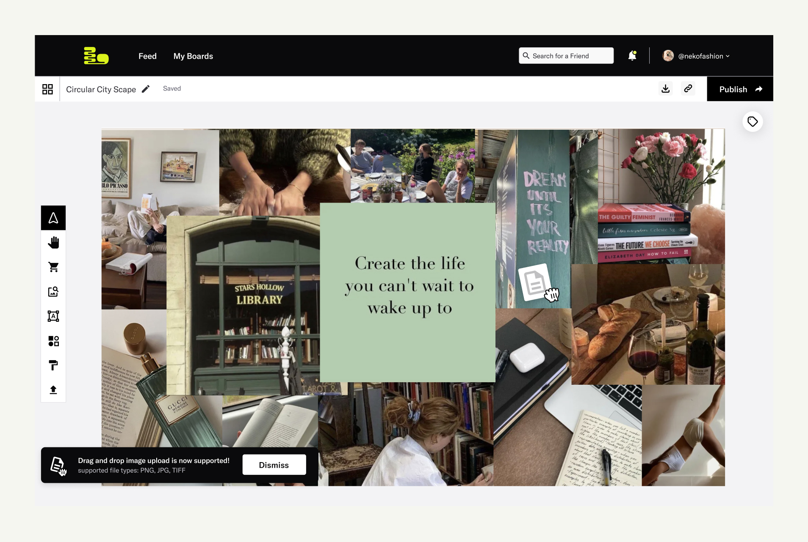
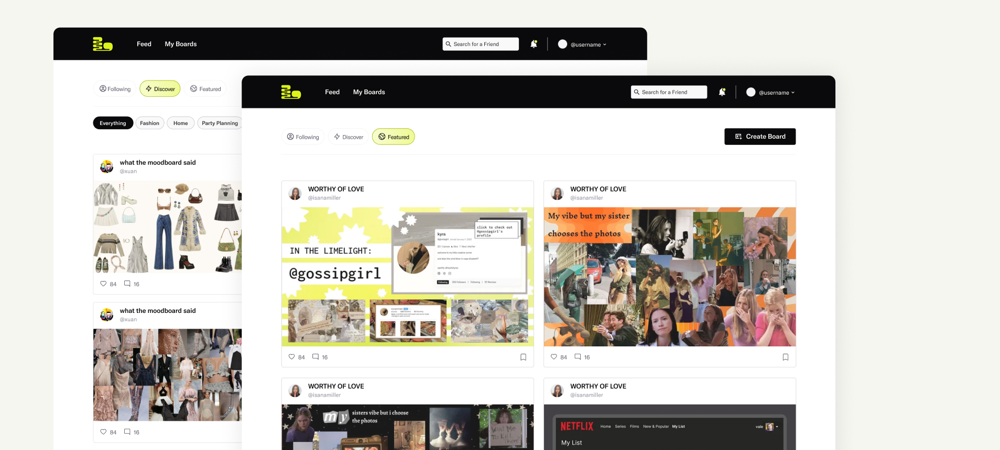
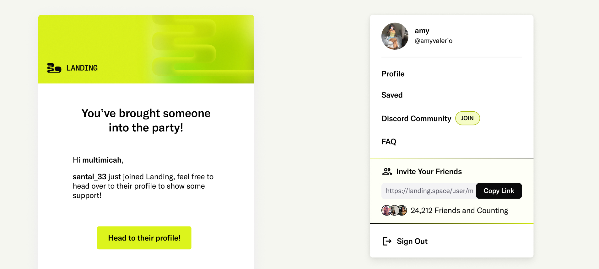
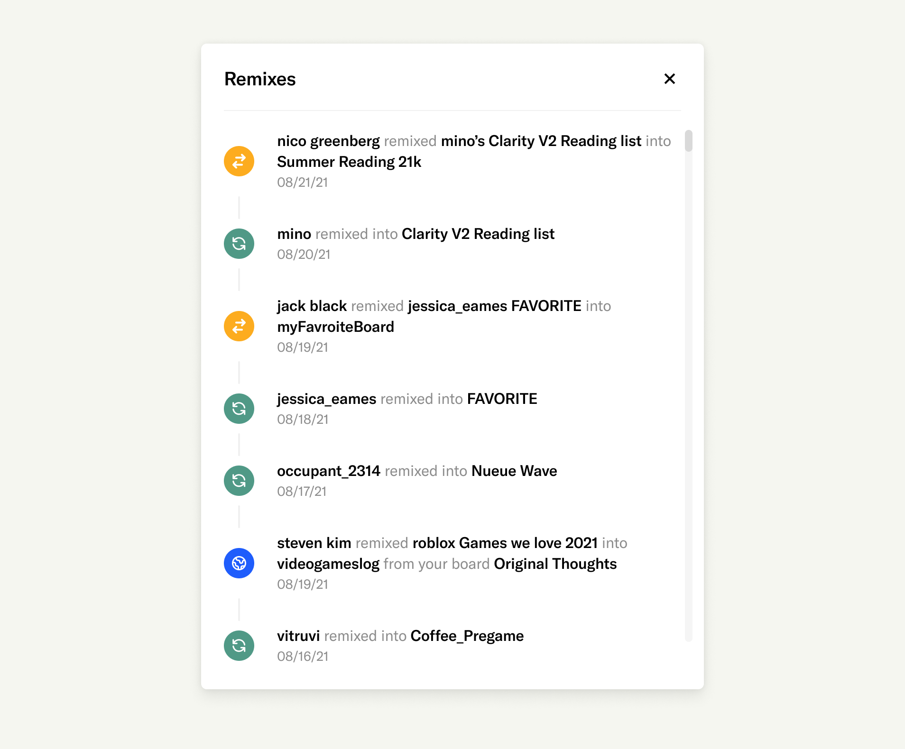

during my time at landing, I was heavily focused on feature by feature work which heavily emphasized key growth metrics.
Overview
the work you’ll see below, will help explain the product, and also show some features that we’re focused on for growth and information architecture.
basics of the platform
the primary view for the creator type on the platform.
the creator type of user would often be on the moodboard creation page, which allowed them to upload image files and write details + link asset credits.
after a user uploads an asset, there's a level of detail they can add.
the creator type of user would often be on the moodboard creation page, which allowed them to upload image files and write details + link asset credits.
the public board after a users creates a board.
when the user shares their board, other users can engage through commenting, reactions, and remixing. remixing is one of the special features of landing where you can use another moodboard as a starting point for your own board (more details later in case study)
the public board after a users creates a board.
all public boards live on the various feeds, one for all of the users that you follow, one feed for everything on the platform and can be filtered by specifics, and the last would be the community featured boards.
tldr
the bread and butter of the platform was allowing users to have a quick way to put together image assets into one “board”. then continue to build a community around the types of boards they enjoy, as well as see how others iterate on thier content. for partnered brands the data on products used in these boards was key for brand deals + influencers.
assorted ui updates
creating card updates, avoiding simply copying other apps.
card updates
when updating the cards, from the previous iterations we wanted to clean up the entire feed for information that would be most valuable on this app. we wanted others to see that their was activity on this platform with the comment count, and allow them engage from the feed as well.
features related to growth
user refferal - how might we allow users to feel included
we wanted folks to feel included in growing the platform, given not being one of the social media giants. so we started with a small refferal program, with it’s first iteration having a count of how many people you bring into the platform (from your content, or invitation link). eventually the plan would be with physical incentives like merch or a status notification near the username of the user.
profile page updates
To go in the direction of a profile page that had the user feel like they had a place of their own on the internet. we launched various methods of user testing within our power users and some folks that never used the platform before. gaining insights about what levels of customization they should have on their profile.
spaces or many would call it collection view
another type of user on the platform was someone who didn’t do much creating but enjoyed simply organizing content, think of a pinterest user.
so I lead the initative of creating “spaces” which was a collection of boards a user could collect from the public feed.
eventually users could engage with a space, following or leaving reactions and comments.
Content Organization (Infomation Architecture Work)
with users having the ability to remix or springboard off another board, the original user creating needed remain creditted. I worked on a system to make sure the information architecture of remixing always went back to the original creator and even the modifiers.
In Retrospective
my time at landing was a great learning experience, doubling with product design and brand building at a small startup. going back i’d love to make changes with micro-interactions and just small little tweaks to make it all feel “whole”. none the less i’m sure the direction they’re headed in will give much success.